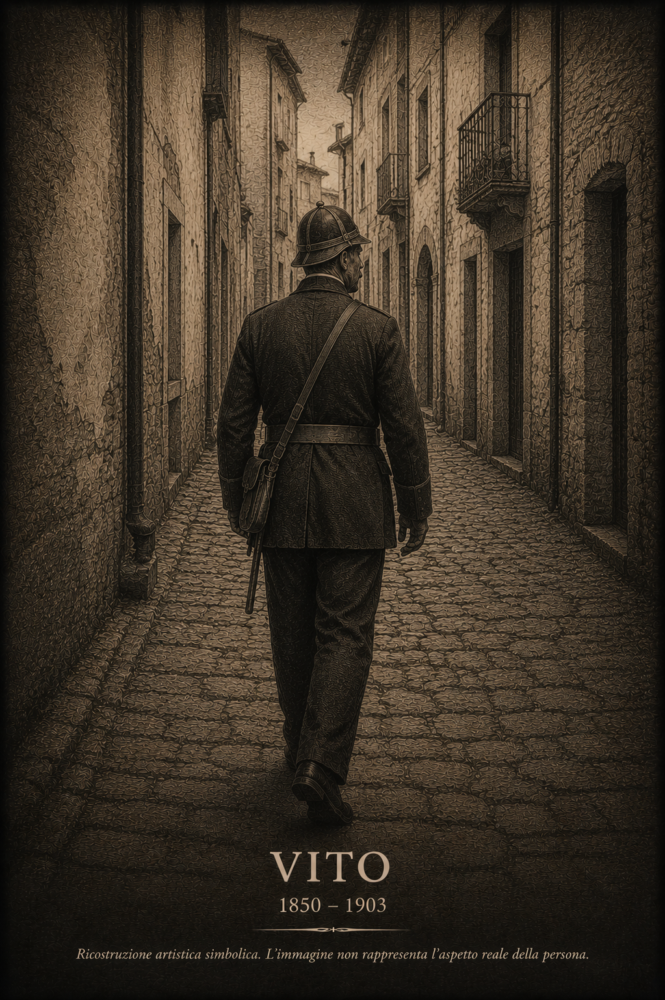

La generazione che consolidò definitivamente la presenza della famiglia Cardiello a Eboli.

Ricostruzione artistica simbolica. L'immagine non rappresenta l'aspetto reale della persona.
Dati principali
| Nome | Vito Cardiello |
|---|---|
| Nascita | 20 ottobre 1850 |
| Luogo di nascita | Eboli |
| Morte | 25 febbraio 1903 |
| Luogo di morte | Eboli |
| Padre | Nicola Giuseppe Vito Cardiello |
| Madre | Anna Agnese D'Andrea |
| Professione | Industriante, Vivandista, Fattorino, Guardia Municipale |
| Coniuge | Sofia Gallotta |
| Matrimonio | 11 novembre 1879 |
| Luogo del matrimonio | Eboli |
| Figli documentati | 8 |
| Linea esposta | prosegue attraverso Cosimo Cardiello |
Biografia
Vito Cardiello nacque il 20 ottobre 1850 a Eboli nella casa paterna. Il giorno successivo fu battezzato nella Chiesa di San Nicola.
Figlio del calzolaio Nicola Cardiello e di Anna Agnese D'Andrea, svolse nel corso della vita diverse attività professionali che testimoniano una significativa mobilità sociale rispetto alle generazioni precedenti.
Le fonti lo qualificano successivamente come industriante, vivandista, fattorino e infine guardia municipale del Comune di Eboli.
L'11 novembre 1879 sposò Sofia Gallotta. La famiglia abitò in via Sant'Antonio, una delle principali strade della città.
Morì il 25 febbraio 1903 all'età di 53 anni nella propria abitazione.
Una famiglia in trasformazione
Con Vito Cardiello la famiglia consolida definitivamente la propria presenza a Eboli.
Le professioni documentate mostrano un progressivo allontanamento dalle attività agricole e artigianali tradizionali verso occupazioni sempre più integrate nella vita urbana e amministrativa della città.
Questo processo accompagnerà la famiglia nel passaggio tra XIX e XX secolo.
Coniuge
Sofia Gallotta
| Nascita | 12 maggio 1862 |
|---|---|
| Luogo | Eboli |
| Morte | 31 gennaio 1917 |
| Luogo | Eboli |
| Padre | Berniero Gallotta |
| Madre | Maria Michela Ofiero |
Figli documentati
| Nome | Data |
|---|---|
| Nicola | 1881–1943 |
| Cosimo | 1882–1958 |
| Agnese | 1886–1971 |
| Domenico | 1888–1890 |
| Chiara Maria Concetta | 1891–1906 |
| Domenico | 1894–1942 |
| Francesco | 1897–1917 |
| Antonio | 1900–1997 |
Professione e condizione sociale
La documentazione mostra un percorso lavorativo articolato che riflette la trasformazione economica e sociale di Eboli nella seconda metà dell'Ottocento. L'approdo al ruolo di guardia municipale testimonia una posizione stabile all'interno dell'amministrazione cittadina.
Luoghi
- Chiesa di San Nicola (Eboli)
- Via Sant'Antonio (Eboli)
- Comune di Eboli
Eventi significativi
Francesco Cardiello (1897–1917)
Il figlio Francesco fu soldato del 236° Reggimento Fanteria durante la Prima Guerra Mondiale.
Morì il 24 luglio 1917 presso l'ospedaletto da campo n. 85 di Saciletto (Udine) in seguito alle ferite riportate in combattimento.
Nel 1924 le sue spoglie furono riportate a Eboli e tumulate nella cappella di famiglia.
Fonti
- Registro Battesimi
- Registro Matrimoni
- Registro Morti
Note genealogiche
Con Vito Cardiello la famiglia consolida la propria presenza a Eboli. Le professioni documentate mostrano una progressiva mobilità sociale rispetto alle generazioni precedenti. Attraverso il figlio Cosimo prosegue la linea paterna che porterà alla generazione contemporanea.
Documenti e approfondimenti
Sezione in aggiornamento. Saranno inseriti documenti anagrafici, fotografie di famiglia e approfondimenti relativi all'attività di guardia municipale svolta da Vito Cardiello.